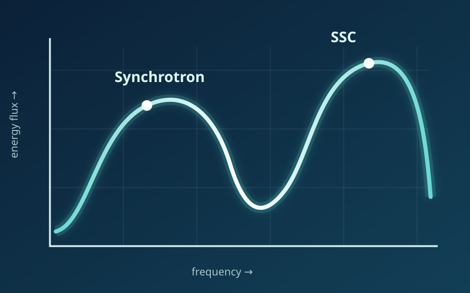
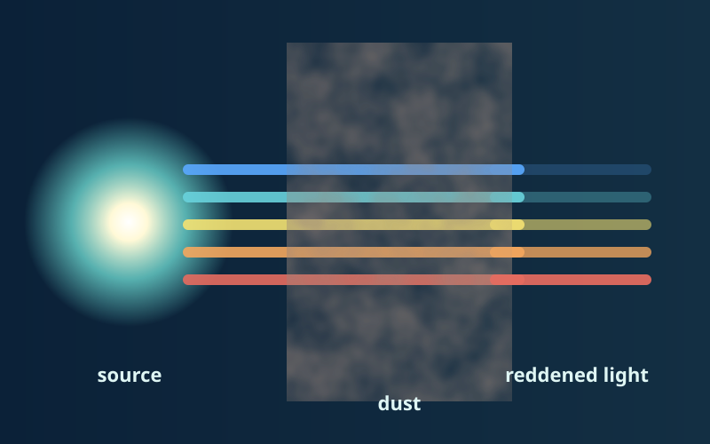

01
Broadband emission from relativistic jets
Modeling synchrotron and inverse-Compton radiation to constrain particle populations, magnetic fields, source size, and Doppler boosting.
Related publicationsAstrophysics · Spectral modeling · Open science
I study how radiation, particles, magnetic fields, and dust shape the spectra of active galaxies and quasars. My work combines physical modeling, statistical inference, and reproducible scientific software.
Welcome
I am an astrophysics researcher interested in extracting physical information from broadband astronomical spectra. I build models that connect observations across radio, infrared, optical, X-ray, and gamma-ray wavelengths.
This starter site is intentionally simple: every section is contained in one HTML file, it requires no build system, and it can be published directly from the root of a GitHub Pages repository.
Research
Replace these sample topics with your own projects, collaborations, and results.

01
Modeling synchrotron and inverse-Compton radiation to constrain particle populations, magnetic fields, source size, and Doppler boosting.
Related publications
02
Studying how dust changes observed continua and emission features, and applying wavelength-dependent attenuation laws consistently in spectral models.
Methods and code03
Using MCMC and posterior diagnostics to quantify model parameters, degeneracies, and uncertainties rather than relying only on a single best fit.
View softwareSoftware & data
Highlight public repositories, data releases, notebooks, or analysis pipelines here.
A Python workflow for constructing continua, applying extinction, interpolating spectra, and comparing models with data.
Open repositoryDocumented MCMC samples, parameter definitions, units, and scripts needed to reproduce figures and summary tables.
Browse dataPublications
Use this section for selected papers and link your full bibliography through ADS, ORCID, or Google Scholar.
Get in touch
I welcome questions about my work, possible collaborations, and reproducible astrophysical modeling.
your.email@example.com